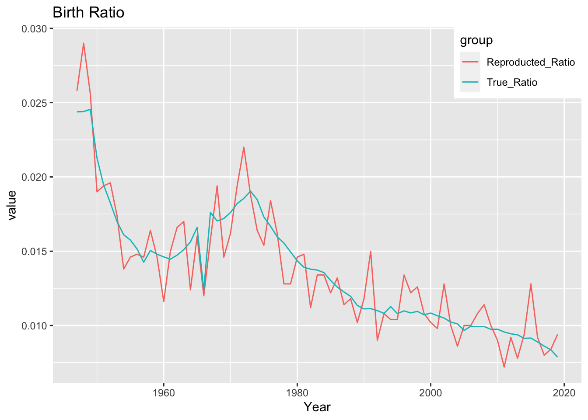

2.2 出生・死亡のシミュレーション
出生と死亡をシミュレーションして、擬似健康保険組合データを作成する。
2.2.1 関数を定義する
library(magrittr)
library(dplyr)
library(stringr)
library(purrr)
ym_to_t = function(yyyymm = "2022/06"){
#' transform YYYY/MM to time value
#'
#' @param yyyymm character : YYYY/MM or YYYY/M
#' @usage ym_to_t(yyyymm)
#' @return character (time value)
tmp = yyyymm %>% str_split("/") %>% .[[1]] %>% as.numeric()
tmp[2] = tmp[2] - 0.5
tmp[2] = tmp[2] / 12
return(as.character(sum(tmp)))
}
t_to_ym = function(time){
#' transform time value to YYYY/MM
#'
#' @param time string or numeric : year value (ex. 2022) + month value (ex.0.3),
#' @usage t_to_ym(time)
#' @return character : "YYYY/MM"
time = as.numeric(time)
year = as.integer(time)
month = as.integer( (time - year) * 12 ) + 1
month = max(min(month, 12), 1)
paste(year, sprintf("%02d", month), sep = "/") %>% return
}
tmp = c("2222/6", "2022/5")
df = data.frame(tmp1 = tmp)
## テスト
df %>%
mutate(tmp2 = map_chr(.$tmp, ym_to_t)) %>%
mutate(tmp3 = map_chr(.$tmp2, t_to_ym))## tmp1 tmp2 tmp3
## 1 2222/6 2222.45833333333 2222/06
## 2 2022/5 2022.375 2022/052.2.2 出生のシミュレーション
出征シミュレーション用のデータ読み込み。(01-01で作成したもの)
library(readr)
df_birth = read_csv("./data/ipss_birth.csv")## Rows: 146 Columns: 5## ─ Column specification ──────────────────────
## Delimiter: ","
## chr (1): Sex
## dbl (4): Year, Life, ratio, cum_sum##
## ℹ Use `spec()` to retrieve the full column specification for this data.
## ℹ Specify the column types or set `show_col_types = FALSE` to quiet this message.df_birth %>% head## # A tibble: 6 × 5
## Year Sex Life ratio cum_sum
## <dbl> <chr> <dbl> <dbl> <dbl>
## 1 1947 F 1301806 0.0118 0.0118
## 2 1948 F 1303060 0.0119 0.0237
## 3 1949 F 1316630 0.0120 0.0357
## 4 1950 F 1134396 0.0103 0.0460
## 5 1951 F 1043048 0.00949 0.0555
## 6 1952 F 977101 0.00889 0.0644## 0-1の値から、cumsumを参照して、行番号を返す仕組み
vec = df_birth$cum_sum
vec_ = c(0, vec[1:(length(vec)-1)])
dat_row = data.frame(row_num = 1:length(vec), left = vec_, right = vec)
df_birth$left = vec_
df_birth$right = vec擬似生成のためのパラメータを設定。
観察期間は、指数分布を使っていい感じに決める。
np.random.exponentialのmuと、rexpのrateは、逆数の関係らしいので、注意する。
## 観察期間
start_study_t = 2010 ## 2010年1月
end_study_t = 2019.999 ## 2019年12月
mu = 10 ## 指数分布のパラメータ 観察開始/終了期間が決まる
rate = 1/mu
N = 5000 ## 全体の人数
family_ratio = 0.3 ## 被扶養者が占める割合乱数で保険者を生成する。誕生年の分布は、df_birthに従うことにする。
N_ = N * 20
set.seed(71)
random_value = runif(N_)
df_exposure = data.frame(value = random_value)
## 誕生月判定と、曝露期間の設定
df_exposure = df_exposure %>%
merge(df_birth, all = TRUE) %>%
filter(left <= value) %>%
filter(value <= right) %>%
select(-left, -right, -value) %>%
mutate(value = runif(nrow(.))) %>%
mutate(value = Year + value) %>%
mutate(birth_ym = map_chr(value, t_to_ym)) %>%
mutate(value1 = rexp(nrow(.), rate = rate)) %>%
mutate(value2 = rexp(nrow(.), rate = rate)) %>%
mutate(start_t = start_study_t - mu + value1) %>%
mutate(end_t = start_t + value2) %>%
filter(start_t >= start_study_t) %>%
filter(end_t <= end_study_t) %>%
mutate(start_obs_ym = map_chr(start_t, t_to_ym)) %>%
mutate(end_obs_ym = map_chr(end_t, t_to_ym))
## 被扶養者判定と、後処理
df_exposure = df_exposure %>%
mutate(value = runif(nrow(.))) %>%
mutate(family = if_else(value < family_ratio, 2, 1 )) %>% ## 1なら本人
select(-value, -value1, -value2, -start_t, -end_t) %>%
mutate(iid = 1:nrow(.)) %>%
mutate(iid = paste("i", sprintf("%06d", iid, sep = "")))
## 整形
df_exposure =
df_exposure %>%
select(iid, Sex, birth_ym, start_obs_ym, end_obs_ym)
## 行数の確保
df_exposure =
df_exposure %>% sample_n(size = N, replace = FALSE)
df_exposure %>% head## iid Sex birth_ym start_obs_ym end_obs_ym
## 1 i 000800 F 1955/11 2011/01 2016/09
## 2 i 005929 M 1959/01 2016/08 2018/03
## 3 i 003572 F 1996/02 2011/04 2015/01
## 4 i 007193 M 1975/02 2013/10 2019/12
## 5 i 007360 M 1976/10 2012/11 2014/12
## 6 i 001612 F 1967/04 2010/08 2013/082.2.2.1 出生比率の確認
df_birthで集計した真の誕生年比率と、擬似生成した誕生比率を比較してみる。
## 擬似生成したデータの誕生年比率集計
df_reproducted_birth =
df_exposure %>%
select(birth_ym) %>%
mutate(birth_year = as.integer(substr(birth_ym, 1, 4))) %>%
select(-birth_ym) %>%
group_by(birth_year) %>%
count() %>%
mutate(Reproducted_Ratio = n/N) %>%
mutate(Year = birth_year) %>%
ungroup() %>%
select(-n, -birth_year) %>%
select(Year, Reproducted_Ratio)
df_reproducted_birth %>% head## # A tibble: 6 × 2
## Year Reproducted_Ratio
## <int> <dbl>
## 1 1947 0.0258
## 2 1948 0.029
## 3 1949 0.0256
## 4 1950 0.019
## 5 1951 0.0194
## 6 1952 0.0196## 真の誕生年比率の集計
df_true_birth =
df_birth %>%
group_by(Year) %>%
summarise(True_Ratio = sum(ratio)) %>%
mutate(Year = as.integer(Year))
df_true_birth %>% head## # A tibble: 6 × 2
## Year True_Ratio
## <int> <dbl>
## 1 1947 0.0244
## 2 1948 0.0244
## 3 1949 0.0245
## 4 1950 0.0213
## 5 1951 0.0195
## 6 1952 0.0182可視化します。
df_birth_compare = merge(df_reproducted_birth, df_true_birth, by = "Year")
library(tidyr)
## 縦持ちして、ggplotします
df_birth_compare_long =
df_birth_compare %>%
gather(group, value, -Year)
library(ggplot2)
df_birth_compare_long %>%
ggplot(aes(x = Year, y = value, color = group)) +
geom_line() +
ggtitle("Birth Ratio") +
theme(legend.position = c(1, 1),
legend.justification = c(1, 1))
…まあ、真の値から上下にブレている…かな…？
1966年は丙午ですね。これで、出生のシミュレーションができました。